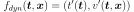
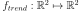
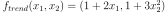
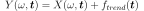
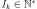
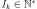

CompositeProcess¶
(Source code, png, hires.png, pdf)
{kind=link}
{kind=link}
-
class
CompositeProcess(*args)¶ Process obtained by transformation.
Parameters: fdyn :
FieldFunctionA field function.
inputProc :
ProcessThe input process.
Notes
A composite process is the image of process by the field function :
where
 and , defined by:
and , defined by:
with and .
The process is defined on the domain
 associated to the mesh
associated to the mesh  .
.Examples
Create the process X:
>>> import openturns as ot >>> amplitude = [1.0, 1.0] >>> scale = [0.2, 0.3] >>> myCovModel = ot.ExponentialModel(scale, amplitude) >>> myMesh = ot.IntervalMesher([100]*2).build(ot.Interval([0.0]*2, [1.0]*2)) >>> myXProcess = ot.GaussianProcess(myCovModel, myMesh)
Create a spatial field function associated to where :
>>> g = ot.SymbolicFunction(['x1', 'x2'], ['x1^2', 'x1+x2']) >>> nSpat = 2 >>> gdyn = ot.ValueFunction(g, nSpat)
Create the Y process :
>>> myYProcess = ot.CompositeProcess(gdyn, myXProcess)
Add the trend  where :
>>> f = ot.SymbolicFunction(['x1', 'x2'], ['1+2*x1', '1+3*x2^2']) >>> fTrend = ot.TrendTransform(f)
Create the process :
>>> myYProcess2 = ot.CompositeProcess(fTrend, myXProcess)
Apply the Box Cox transformation
 where :
where :>>> h = ot.BoxCoxTransform([3.0, 0.0]) >>> hBoxCox = ot.ValueFunction(h, nSpat)
Create the Y process :
>>> myYProcess3 = ot.CompositeProcess(hBoxCox, myXProcess)
Methods
getAntecedent()Get the antecedent process. getClassName()Accessor to the object’s name. getContinuousRealization()Get a continuous realization. getCovarianceModel()Accessor to the covariance model. getDescription()Get the description of the process. getDimension()getFunction()Get the field function. getFuture(*args)Prediction of the  future iterations of the process.
future iterations of the process.getId()Accessor to the object’s id. getInputDimension()Get the dimension of the domain  .
.getMarginal(*args)Get the  marginal of the random process.
marginal of the random process.getMesh()Get the mesh. getName()Accessor to the object’s name. getOutputDimension()Get the dimension of the domain .getRealization()Get a realization of the process. getSample(size)Get realizations of the process. getShadowedId()Accessor to the object’s shadowed id. getSpatialDimension()getTimeGrid()Get the time grid of observation of the process. getTrend()Accessor to the trend. getVisibility()Accessor to the object’s visibility state. hasName()Test if the object is named. hasVisibleName()Test if the object has a distinguishable name. isComposite()Test whether the process is composite or not. isNormal()Test whether the process is normal or not. isStationary()Test whether the process is stationary or not. setDescription(description)Set the description of the process. setMesh(mesh)Set the mesh. setName(name)Accessor to the object’s name. setShadowedId(id)Accessor to the object’s shadowed id. setTimeGrid(timeGrid)Set the time grid of observation of the process. setVisibility(visible)Accessor to the object’s visibility state. -
__init__(*args)¶ x.__init__(…) initializes x; see help(type(x)) for signature
-
getClassName()¶ Accessor to the object’s name.
Returns: class_name : str
The object class name (object.__class__.__name__).
-
getContinuousRealization()¶ Get a continuous realization.
Returns: realization :
FunctionAccording to the process, the continuous realizations are built:
- either using a dedicated functional model if it exists: e.g. a functional basis process.
- or using an interpolation from a discrete realization of the process on
 : in dimension
: in dimension  , a linear interpolation and in
dimension
, a linear interpolation and in
dimension  , a piecewise constant function (the value at a
given position is equal to the value at the nearest vertex of the mesh of
the process).
, a piecewise constant function (the value at a
given position is equal to the value at the nearest vertex of the mesh of
the process).
-
getCovarianceModel()¶ Accessor to the covariance model.
Returns: cov_model :
CovarianceModelCovariance model, if any.
-
getDescription()¶ Get the description of the process.
Returns: description :
DescriptionDescription of the process.
-
getFunction()¶ Get the field function.
Returns: fdyn :
FieldFunctionThe field function
 .
.
-
getFuture(*args)¶ Prediction of the
future iterations of the process.Parameters: stepNumber : int,

Number of future steps.
size : int,
 , optional
, optionalNumber of futures needed. Default is 1.
Returns: prediction :
ProcessSampleorTimeSeries future iterations of the process.
If  , prediction is a
, prediction is a TimeSeries. Otherwise, it is aProcessSample.
-
getId()¶ Accessor to the object’s id.
Returns: id : int
Internal unique identifier.
-
getInputDimension()¶ Get the dimension of the domain
.Returns: n : int
Dimension of the domain
: .
-
getMarginal(*args)¶ Get the
marginal of the random process.Parameters: k : int or list of ints
Index of the marginal(s) needed.
Returns: marginals :
ProcessProcess defined with marginal(s) of the random process.
-
getName()¶ Accessor to the object’s name.
Returns: name : str
The name of the object.
-
getOutputDimension()¶ Get the dimension of the domain
.Returns: d : int
Dimension of the domain
.
-
getRealization()¶ Get a realization of the process.
Returns: realization :
FieldContains a mesh over which the process is discretized and the values of the process at the vertices of the mesh.
-
getSample(size)¶ Get realizations of the process.
Parameters: n : int,

Number of realizations of the process needed.
Returns: processSample :
ProcessSamplerealizations of the random process. A process sample is a collection of fields which share the same mesh
 .
.
-
getShadowedId()¶ Accessor to the object’s shadowed id.
Returns: id : int
Internal unique identifier.
-
getTimeGrid()¶ Get the time grid of observation of the process.
Returns: timeGrid :
RegularGridTime grid of a process when the mesh associated to the process can be interpreted as a
RegularGrid. We check if the vertices of the mesh are scalar and are regularly spaced in but we don’t check if the connectivity of the mesh is conform
to the one of a regular grid (without any hole and composed of ordered
instants).
but we don’t check if the connectivity of the mesh is conform
to the one of a regular grid (without any hole and composed of ordered
instants).
-
getTrend()¶ Accessor to the trend.
Returns: trend :
TrendTransformTrend, if any.
-
getVisibility()¶ Accessor to the object’s visibility state.
Returns: visible : bool
Visibility flag.
-
hasName()¶ Test if the object is named.
Returns: hasName : bool
True if the name is not empty.
-
hasVisibleName()¶ Test if the object has a distinguishable name.
Returns: hasVisibleName : bool
True if the name is not empty and not the default one.
-
isComposite()¶ Test whether the process is composite or not.
Returns: isComposite : bool
True if the process is composite (built upon a function and a process).
-
isNormal()¶ Test whether the process is normal or not.
Returns: isNormal : bool
True if the process is normal.
Notes
A stochastic process is normal if all its finite dimensional joint distributions are normal, which means that for all
 and
, with , there is
and
, with , there is
 and
and
 such that:
such that:
where
 ,
,
 and
and
 and
and
 is the symmetric matrix:
is the symmetric matrix:
A Gaussian process is entirely defined by its mean function
 and its
covariance function
and its
covariance function  (or correlation function
(or correlation function  ).
).
-
isStationary()¶ Test whether the process is stationary or not.
Returns: isStationary : bool
True if the process is stationary.
Notes
A process
 is stationary if its distribution is invariant by
translation: ,
is stationary if its distribution is invariant by
translation: ,
 ,
,
 , we have:
, we have:
-
setDescription(description)¶ Set the description of the process.
Parameters: description : sequence of str
Description of the process.
-
setName(name)¶ Accessor to the object’s name.
Parameters: name : str
The name of the object.
-
setShadowedId(id)¶ Accessor to the object’s shadowed id.
Parameters: id : int
Internal unique identifier.
-
setTimeGrid(timeGrid)¶ Set the time grid of observation of the process.
Returns: timeGrid :
RegularGridTime grid of observation of the process when the mesh associated to the process can be interpreted as a
RegularGrid. We check if the vertices of the mesh are scalar and are regularly spaced in but we don’t check if the connectivity of the mesh is conform
to the one of a regular grid (without any hole and composed of ordered
instants).
-
setVisibility(visible)¶ Accessor to the object’s visibility state.
Parameters: visible : bool
Visibility flag.
-